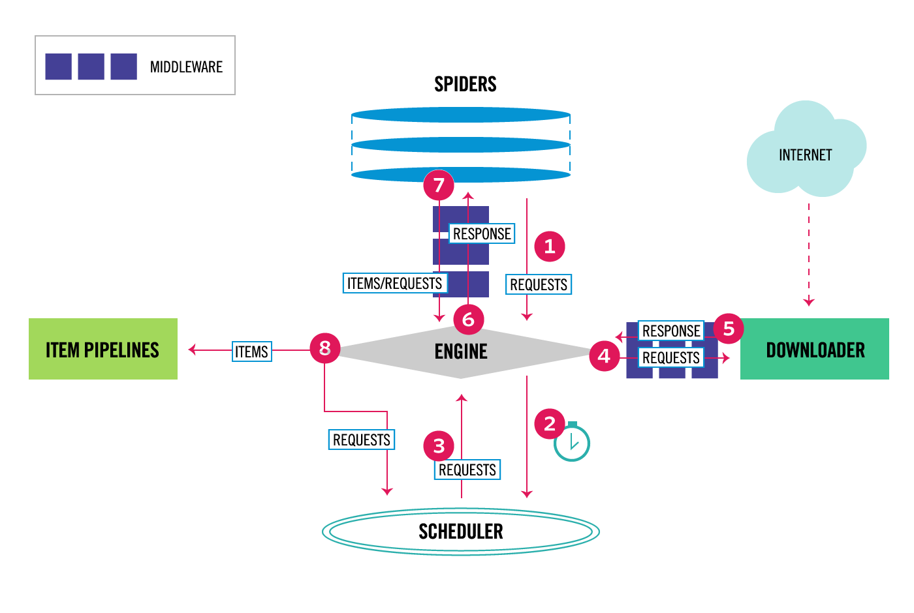
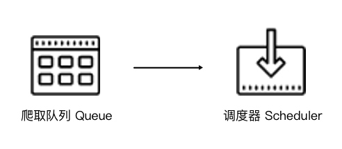
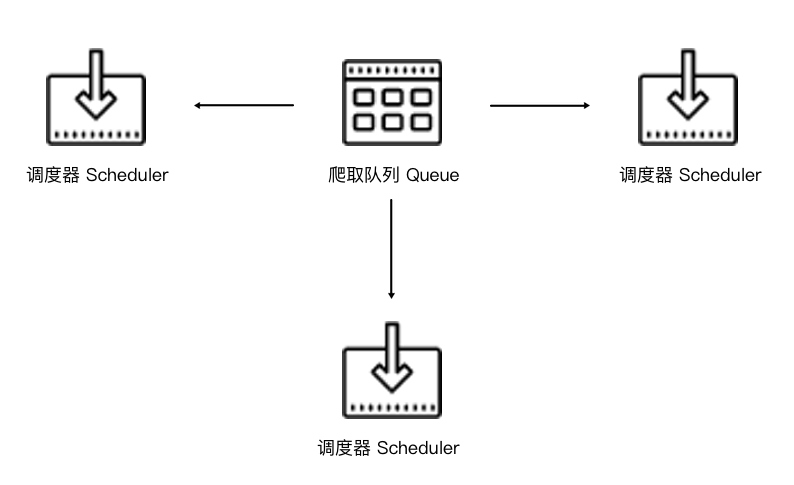

这是什么？
最近简单学习了 Scrapy-Redis 分布式爬虫，这里简单的总结一下
项目设计
项目的设计目标是用来爬取某新闻网站中的新闻，需要的数据包括文章的题目，正文，时间等,采用的方案是 Scrapy+Redis+MongoDB：
- Scrapy: 爬虫框架
- Redis: 维护需要爬取的 url 队列
- MongoDB: 储存用数据库
下面会分章节讲述各部分
Scrapy
关于Scrapy的介绍来自 Python3WebSpider
架构
Scrapy 是一个基于 Twisted 的异步处理框架，Scrapy 框架结构图如下

如上所示，Scrapy 可以分为如下几个部分
Engine：引擎，用来处理整个系统的数据流处理，触发事务，是整个框架的核心。Item：项目，定义了爬取结果的数据结构，爬取的数据会被赋值成该对象。Scheduler：调度器，用来接受引擎发过来的请求并加入队列中，并在引擎再次请求的时候提供给引擎。Downloader：下载器，用于下载网页内容，并将网页内容返回给蜘蛛。Spiders：蜘蛛，其内定义了爬取的逻辑和网页的解析规则，它主要负责解析响应并生成提取结果和新的请求。Item Pipeline：项目管道，负责处理由蜘蛛从网页中抽取的项目，它的主要任务是清洗、验证和存储数据。Downloader Middlewares：下载器中间件，位于引擎和下载器之间的钩子框架，主要是处理引擎与下载器之间的请求及响应。Spider Middlewares：蜘蛛中间件，位于引擎和蜘蛛之间的钩子框架，主要工作是处理蜘蛛输入的响应和输出的结果及新的请求。
数据流
Scrapy 中的数据流由引擎控制，其过程如下图:

- Engine 选择要爬取的网站，找到相应的 Spider 并向该 Spider 请求第一个要爬取的 URL
- Engine 从 Spider 中获取到第一个要爬取的 URL 并通过 Scheduler 以 Request 的形式调度
- Engine 向 Scheduler 请求下一个要爬取的 URL
- Scheduler 返回下一个要爬取的 URL 给 Engine，Engine 将 URL 通过 Downloader Middlewares 转发给 Downloader 下载
- 一旦页面下载完毕， Downloader 生成一个该页面的 Response，并将其通过 Downloader Middlewares 发送给 Engine
- Engine 从下载器中接收到 Response 并通过 Spider Middlewares 发送给 Spider 处理
- Spider 处理 Response 并返回爬取到的 Item 及新的 Request 给 Engine
- Engine 将 Spider 返回的 Item 给 Item Pipeline，将新的 Request 给 Scheduler
重复第 2~8，直到 Scheduler 中没有更多的 Request，Engine 关闭该网站，爬取结束
通过多个组件的相互协作、不同组件完成工作的不同、组件对异步处理的支持，Scrapy 最大限度地利用了网络带宽，大大提高了数据爬取和处理的效率。
项目结构
项目创建之后，项目文件结构如下所示：
1 | scrapy.cfg |
各个文件的功能描述如下：
scrapy.cfg：是 Scrapy 项目的配置文件，其内定义了项目的配置文件路径、部署相关信息等内容items.py：定义 Item 数据结构，所有的 Item 的定义都可以放这里pipelines.py：定义 Item Pipeline 的实现，所有的 Item Pipeline 的实现都可以放这里settings.py：定义项目的全局配置middlewares.py：它定义 Spider Middlewares 和 Downloader Middlewares 的实现spiders：内包含各个 Spider 的实现，每个 Spider 都有一个文件
Spiders
Spiders中配置包括网站的链接配置、抓取逻辑和解析逻辑
运行流程
Spiders 需要做的：
- 定义爬取网站的动作
- 分析爬取下来的网页
爬取循环：
- 用初始URL初始化Request，设置回调函数；Request请求成功并返回时，生成Response，当作参数传递给回调函数
- 回调函数中分析返回的网页内容：
- 如果返回的内容为字典或item对象，可以直接处理、保存，或交与Pipeline处理（如过滤、修正，保存等）
- 如果解析得到下一个链接，则再次构造Request请求并设置新的回调函数
Spider 类分析
Spider默认继承自 scrapy.spiders.Spider，它是所有 Spider 的基类，他有一些基础属性：
name：爬虫名称allowed_domains：允许爬取的域名，不在此域名中的链接不会爬取，可选配置start_urls：起始 URL 列表，如果没有实现 start_request()方法时，默认从这个列表开始爬取custom_settings：字典，此Spider的专属配置，会覆盖全局配置crawler：代表的是本 Spider 类对应的 Crawler 对象，Crawler 对象中包含了很多项目组件，利用它我们可以获取项目的一些配置信息，如最常见的就是获取项目的设置信息，即 Settingssettings：是一个 Settings 对象，利用它我们可以直接获取项目的全局设置变量
Spider 的常用方法：
start_request()：生成初始请求，他必须返回一个可迭代对象(内部使用 yield 返回)- 默认使用 start_urls 里的 URL 来构造 Request，默认使用GET请求方式；要使用POST则需要重写这个方法
parse()：默认回调函数，如果Response没有指定回调函数，就会调用它closed()：关闭时会调用的函数
Item Pipeline
Item Pipeline 是项目管道
- 调用发生在Spider返回item之后
- 已经定义的 Item Pipeline 组件会顺次调用
- 可以完成过滤、修正，保存工作等
核心方法
想自定义 Item Pipeline 可以通过实现一下方法
process_item(item, spider)
必须要实现，Item Pipeline 会默认调用这个方法对 item 进行处理，他的参数有两个：
item，被处理的 Itemspider，生成该 Item 的 Spider
它必须返回 Item 类型的值或者抛出一个 DropItem 异常：
- 如果返回的是 Item 对象，那么此 Item 会接着被低优先级的 Item Pipeline 的 process_item() 方法进行处理，直到所有的方法被调用完毕
- 如果抛出的是 DropItem 异常，那么此 Item 就会被丢弃，不再进行处理
open_spider(self, spider)
可选实现，在 Spider 开启的时候被自动调用的，在这里我们可以做一些初始化操作，如开启数据库连接等。
其中参数 spider 就是被开启的 Spider 对象。
close_spider(spider)
可选实现，在Spider 关闭的时候自动调用的，在这里我们可以做一些收尾工作，如关闭数据库连接等。
其中参数 spider 就是被关闭的 Spider 对象。
from_crawler(cls, crawler)
可选实现，from_crawler() 方法是一个类方法，用 @classmethod 标识，是一种依赖注入的方式
它的参数是 crawler，通过 crawler 对象，我们可以拿到 Scrapy 的所有核心组件，如全局配置的每个信息，然后创建一个 Pipeline 实例。参数 cls 就是 Class，最后返回一个 Class 实例。
分布式爬虫(Redis 队列)
Scrapy 是异步多线程的，但是只能在一台主机上运行；为了进一步提升爬取效率，使用多台主机的分布式爬虫是更好的选择
分布式爬虫架构
Scrapy 和分布式爬虫的爬取队列的区别：
Scrapy 爬取队列

Scrapy 单机爬虫中有一个本地爬取队列 Queue，这个队列是利用 deque 模块实现的。新的 Request 生成就会放到队列里面，随后 Request 被 Scheduler 调度，之后，Request 交给 Downloader 执行爬取
分布式爬取队列

通过将 Scheduler 可以扩展多个，Downloader 也可以扩展多个。而爬取队列 Queue 必须始终为一个，也就是所谓的共享爬取队列，这样才能保证 Scheduer 从队列里调度某个 Request 之后，其他 Scheduler 不会重复调度此 Request，就可以做到多个 Schduler 同步爬取。
我们需要做的就是在多台主机上同时运行爬虫任务协同爬取，而协同爬取的前提就是共享爬取队列。这样各台主机就不需要各自维护爬取队列，而是从共享爬取队列存取 Request。但是各台主机还是有各自的 Scheduler 和 Downloader，所以调度和下载功能分别完成。
维护爬取队列
出于性能考虑，可以使用基于内存储存的 Redis 来实现维护队列，可使用的数据结构有：
List：列表数据结构有 lpush()、lpop()、rpush()、rpop() 方法，可以实现一个先进先出式爬取队列，也可以实现一个先进后出栈式爬取队列Set：集合的元素是无序的且不重复的，可以实现一个随机排序的不重复的爬取队列Sorted Set：有序集合带有分数表示，而 Scrapy 的 Request 也有优先级的控制，可以实现一个带优先级调度的队列
去重
Scrapy 中的去重使用了 Python 中的集合，集合中记录了每个 Request 的指纹(散列值)；同样，Redis 中也有集合数据结构，因此同样可以使用 Request 指纹来实现去重
中断后重新爬取
要做到中断后继续爬取，我们可以将队列中的 Request 保存起来，下次爬取直接读取保存数据即可获取上次爬取的队列。
在 Scrapy 中，我们指定一个爬取队列的存储路径，把爬取队列保存到本地，第二次爬取直接读取并恢复队列即可，可见官方文档。
Redis 中，因为爬取队列本身就是用数据库保存的，如果爬虫中断了，数据库中的 Request 依然是存在的，下次启动就会接着上次中断的地方继续爬取。所以，当 Redis 的队列为空时，爬虫会重新爬取；当 Redis 的队列不为空时，爬虫便会接着上次中断之处继续爬取
Scrapy-Redis 的改造
基于现有的Scrapy项目，可以很方便的实现改造
准备工作
安装 Redis
- 设置密码：/etc/redis.conf 文件中修改一下文字
1
2
3
4
5
6
7# IMPORTANT NOTE: starting with Redis 6 "requirepass" is just a compatiblity
# layer on top of the new ACL system. The option effect will be just setting
# the password for the default user. Clients will still authenticate using
# AUTH <password> as usually, or more explicitly with AUTH default <password>
# if they follow the new protocol: both will work.
#
requirepass password- 启动：
sudo redis-server /etc/redis.conf
安装 Scrapy-Redis 库
改造现有Scrapy项目
Setting.py
- 添加如下内容
1 | # 启用Redis |
Spider 文件
- 修改爬虫继承自 RedisSpider
1 | # 继承 RedisSpider |
- 指定redis_key集合名和服务器地址
1 | redis_key = 'spiderTest:start_url' |
- 将下一页请求推入队列的操作
1 | def insert_next_url(self): |
MongoDB 储存配置
准备工作
安装 MongoDB
启动 MongoDB：
sudo mongod --dbpath /data/tem/mongo_data数据库路径为 /data/tem/mongo_data
配置项目
Setting.py
1 |
|
Pipeline.py
1 | # 存入MongoDB |